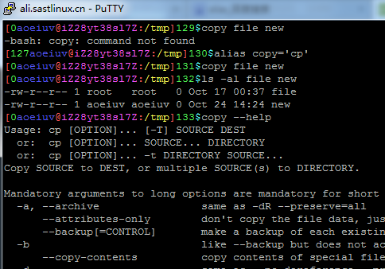
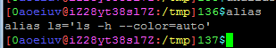
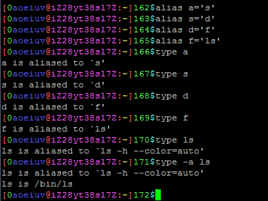
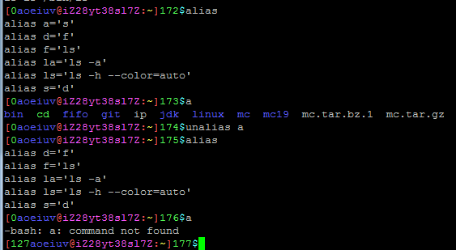

认识alias，直译是别名，就是给一个命令起一个别名，比如alias copy='cp'，这就表示接下来输入的命令copy，相当于输入cp。

显然alias不只这么点用处，比如直接输入alias就可以看到已经设置了的别名，这里只有一个，alias ls='ls --color=auto'。

这样设置别名以后，输入ls，就相当于输入了"ls -h --color=auto"，这个--color=auto表示自动判断是否带颜色，显然很重要，有颜色除了好看点还能方便判断文件类型，但是这么长的参数，如果每次都输入这参数显然太麻烦了，有了这个alias，只要输入ls就可以了，还有常用的和ls有关的alias，比如，alias la='ls -a'，alias ll='ls -l'，这个-a参数表示显示隐藏文件，-l参数表示显示详细信息，由于这两个alias比较常用，所以有可能在别的地方见到la和ll这两个“命令”，但是要知道这两个其实只是设置的别名，不是原本就有的命令，用type可以看出一个命令是不是别名，如果有多层alias，可以一路用type跟踪，如果有alias指向自己，比如上面的ls，可以用type -a跟踪。

然后是去掉别名，unalias，这就没什么好说了，就是把alias设置的别名取消掉。

还有就是这个alias设置的别名只有这一次会生效，退出后下次登陆就没有了，要保存在每次自动加载的脚本比如~/.bashrc里面才能每次生效，具体会在后面说。